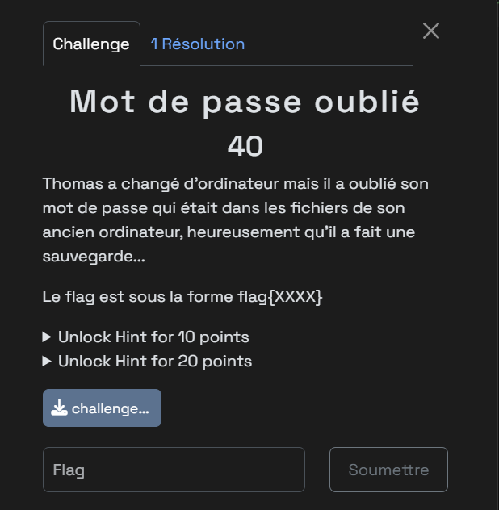
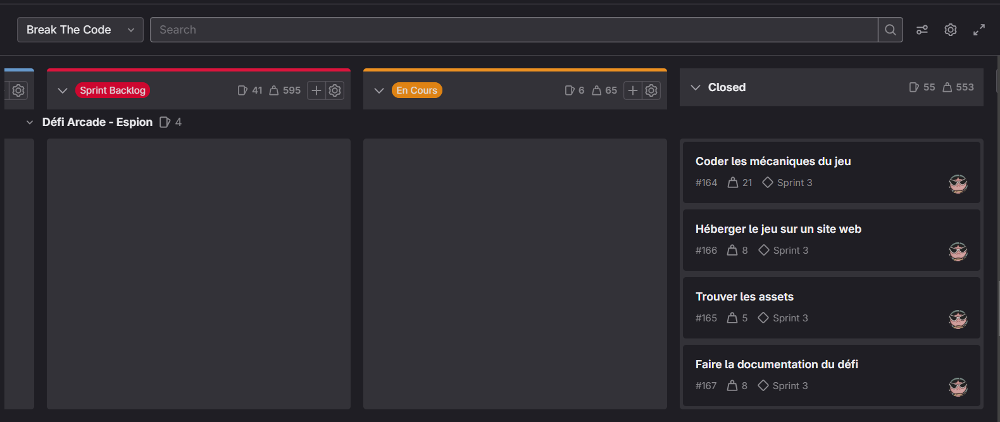

Projet CTF : Break The Code
Projet CTF : Break the code
Dans le cadre de ma deuxième année de BUT Informatique, j’ai participé à un projet en équipe visant à concevoir un site web d’hébergement de Capture The Flag (CTF). Les CTF sont des événements pédagogiques axés sur la cybersécurité, dans lesquels les participants résolvent des défis pour obtenir un “flag” (code secret). Le projet s’est appuyé sur l’outil open source CTFd, qui fournit une base fonctionnelle modulable, que nous avons personnalisée pour répondre aux besoins du client.

Exemple de défis et visuel de celui-ci.
Objectifs et Organisation
Le projet s’est déroulé sur plusieurs semaines en méthode agile SCRUM, avec :
- des daily meetings pour la synchronisation de l’équipe
- des sprints de deux semaines
- une planification et un suivi du projet via GitLab (issues, board, backlog)
- des reunions avec le client à intervalles réguliers
Notre objectif était double : personnaliser la plateforme CTFd et concevoir des défis originaux, en mettant l’accent sur la créativité, la technique et l’expérience utilisateur.

Backlog GitLab
Réalisations personnelles
Au sein de l'équipe, j'ai pris en charge plusieurs aspects :
-
Création de défis :
- Un défi Forensic basé sur une image disque Linux personnalisée (créée via le terminal), où l’utilisateur devait fouiller les fichiers pour trouver le flag.
- Un défi Web basé sur les cookies, réalisé en HTML et PHP.
- Un mini-jeu interactif en GDScript (Godot Engine) simulant une quête numérique à travers un poste informatique.
-
Contribution graphique :
- Réalisation de la charte visuelle du site : couleurs, page des règles, personnalisation des cartes de défis.
- Développement de pages HTML/CSS pour intégrer le design au sein de CTFd.
-
Participation à l’infrastructure technique :
- Découverte et utilisation de Docker et Portainer pour le déploiement de CTFd.
Le projet Break The Code a été une expérience complète mêlant développement, cybersécurité, design, infrastructure et gestion agile. Il m’a permis de mobiliser des compétences transversales tout en approfondissant mes connaissances techniques dans des domaines que j’apprécie particulièrement : la création de défis interactifs, la personnalisation d’interfaces web et l’organisation de projet collaboratif.
Travailler avec un client réel et une équipe m’a permis de développer mon sens de l’adaptation, de la communication et de la rigueur technique. Ce projet m’a également donné un premier aperçu concret des défis liés à la mise en production d’un service web sécurisé, ce qui en fait l’un des projets les plus formateurs de ma formation jusqu’à présent.
Compétences mobilisées :
Compétence 1 : Réaliser un développement d'application
Création de défis en Forensic, Web et GDScript avec logique spécifique à chaque type, intégration dans un environnement sécurisé.
Définition des valeurs de points, catégories, visibilités, flags et types de réponse pour chaque défi sur la plateforme
Compétence 2 : Optimiser des applications
Personnalisation des thèmes CSS et structuration HTML/CSS pour le visuel des cartes, la navigation et la page de règles.
Compétence 3 : Administrer des systèmes informatiques communicants complexes
Déploiement et Maintenance du projet via Docker et Portainer
Compétence 4 : Gérer des données de l'information
Paramétrage des modèles de données pour les défis, catégories, scoring, utilisateurs et feedbacks sur les résultats.
Compétence 5 : Conduire un projet
Participation à la planification, à la priorisation via le backlog, aux sprints de développement et aux réunions client.
Compétence 6 : Collaborer au sein d'une équipe informatique
Travail collectif avec répartition claire des tâches (infrastructure, design, défis), entraide technique et communication active.
Compétences utilisées
- Langages:
- HTML5
- CSS3
- Php
- GDScript
- Gestion de projet:
- Gitlab
- Méthodes Agiles
Informations du projet
- Categorie Programmation Web, Programmation GDScript
- Période du projet Octobre 2024 à Janvier 2025
- Voir le site